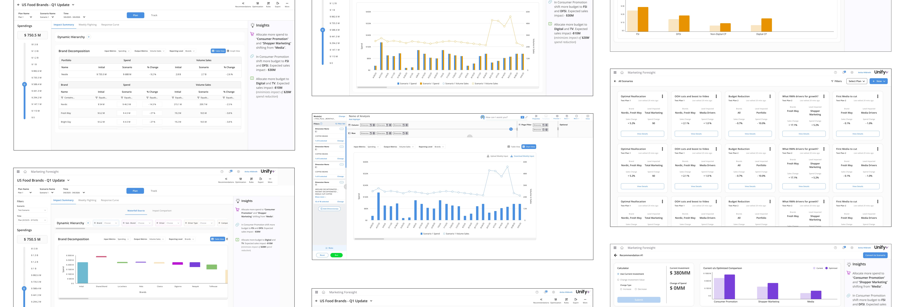
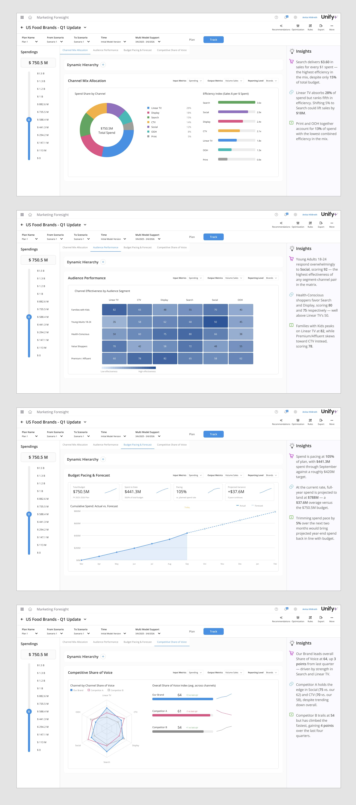
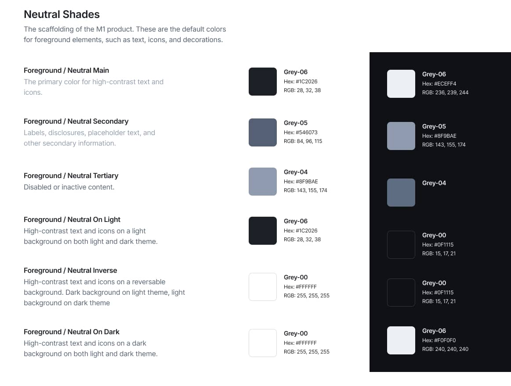

Case study ds/unify-plus · Circana
Circana: an enterprise design system
A nine-month initiative that transformed how Circana builds digital products — addressing fundamental challenges around consistency, quality, and accessibility across an enterprise analytics platform.
Circana is a global leader in consumer intelligence, providing analytics and insights that help the world's leading brands and retailers understand consumer behavior. With thousands of clients relying on its data platforms to make critical business decisions, the need for consistent, accessible, high-quality digital experiences grew increasingly urgent as the product portfolio expanded.

Impact
Outcomes
- 50%design-to-engineering handoff time cut in half
- 45core components accounting for 80% of screens
- AAfoundations redesigned to be WCAG AA compliant
Cross-product consistency improved measurably, raising the quality bar across the platform.
The problem
Building a scalable foundation for data-driven products
As Circana's suite of analytics applications grew, so did the fragmentation across their user interfaces.
What I observed
- Each new feature or application meant reinventing solutions that had already been solved elsewhere in the organization.
- UI patterns were inconsistent across applications.
- Core elements were not WCAG compliant.
Unique challenges
A fast-moving analytics business
The challenge was compounded by the nature of the business. In a fast-moving analytics space where data visualization and complex interfaces are core to the product experience, teams needed a system that could adapt quickly while maintaining quality.
- Need for rapid adaptation.
- Complex data visualization requirements.
- Distributed global teams, with engineering based in India.
- Bridging geographical and knowledge gaps.
Over nine months, I led the creation and implementation of the system, working closely with engineering teams and analyst stakeholders to build a comprehensive foundation that would scale across the organization — architected with accessibility as a first-class concern, not an afterthought. That required clear standards and comprehensive training to ensure successful adoption across distributed teams.

-
scope/01
Foundations
Color, type, spacing, and interaction standards — architected to meet WCAG AA from the ground up.
-
scope/02
Components
45 core components covering 80% of screens, plus a purpose-built data visualization library.
-
scope/03
Layouts
Page-level patterns composed from the core set, built for analytics-dense screens.
Foundational architecture
Accessibility-first, analytics-ready
Accessibility-first architecture
- WCAG compliance from the ground up.
- Minimum AA color contrast ratios.
- Keyboard navigation patterns.
- Screen reader support.
- Focus management.

Analytics-specific components
A purpose-built data visualization library:
- Line graphs, bar charts, scatter plots, heat maps.
- Colorblind-safe palettes.
- Proper labeling and alternative representations.
- Flexible, yet accessible.


Training & enablement
Enabling teams across the globe
- Comprehensive training materials.
- Hands-on workshops for India-based teams.
- Component composition training.
- Accessibility testing practices.
- Extension best practices.

Impact
Transforming how the organization builds
The system transformed how Circana builds digital products — creating a foundation that balances consistency with flexibility, raises the quality bar for accessibility, and lets teams move faster while building better experiences for the analysts and business users who depend on their tools.
Establishing standards for the most-used components allowed teams to build interfaces with less oversight and greater speed to market. Design never became a bottleneck: engineering teams could create screens seamlessly. I reviewed new interfaces in a testing environment, and only when a genuinely new need surfaced did I build a new iteration of a component or dashboard.
Accomplishments
- A foundation for consistency with flexibility.
- Elevated accessibility standards.
- Faster delivery of better experiences.
- Empowered teams across the organization.

Launch story
Marketing Predictions: shipping a new product in one month
With the system in place, a brand-new product shipped in 1 month instead of 3.
With the established design system, we delivered brand-new experiences faster. Marketing Predictions borrowed the system's styles and components to create an entirely new experience for customers — shipped in one month instead of the three it would have taken without a system, and ultimately increasing revenue.